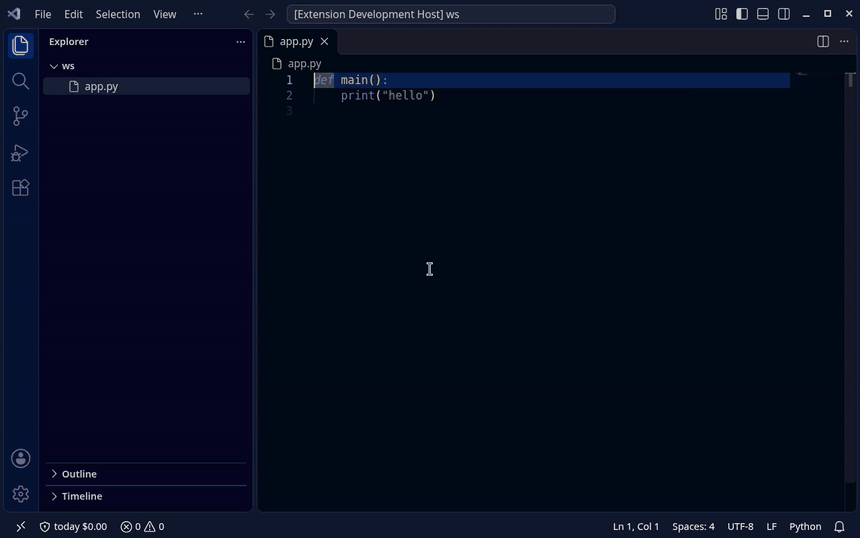

Free
$0 MIT License
- Per-run spend cap
- Output clamping, fail-closed metering
- Claude Code, Codex, Gemini CLI, SDK scripts
- Tells you when Pro’s loop breaker would have stopped a loop
Local spend caps for unattended API-key agent runs
And a loop breaker that texts you before an overnight run burns $500.
agentcap run --cap 3 -- claude -p "..." → the agent is stopped before it spends more than $3.
AgentCap runs Claude Code, Codex CLI or Gemini CLI behind a local proxy on
127.0.0.1 and applies a local spend cap to the run. Before
each request it reserves the worst-case cost, clamps the output limit
when the budget runs short, and when the cap is reached it kills the
local process — then prints why.
No account. Works in API-key mode. Prompts and keys pass through the local proxy in memory and are never stored or uploaded.
A looping agent or a long unattended Codex CLI / Gemini CLI run can burn money on API keys while you are not watching. Provider budget alerts are delayed and usually do not stop anything — by the time the email arrives, the spend has already happened.
agentcap run --cap 2 -- codex exec "fix the failing tests"
agentcap run --cap 2 -- gemini -p "refactor utils.py"
agentcap run --cap 2 -- python my_agent.py
Uses your API key (OPENAI_API_KEY /
GEMINI_API_KEY). ChatGPT or Google sign-in
(OAuth/subscription) traffic is not metered.
AgentCap routes supported CLIs automatically: it injects a Codex
provider override for Codex CLI and a temporary
GEMINI_CLI_HOME overlay for Gemini CLI (your
~/.gemini is linked, settings.json is
copied with api-key auth; nothing in ~/.gemini is
modified).
For your own script it sets OPENAI_BASE_URL and
GOOGLE_GEMINI_BASE_URL for the child. It meters
POST /v1/responses and /v1/chat/completions
— Codex CLI uses the Responses API — and Gemini
generateContent / streamGenerateContent.
Before each request it reserves the worst-case cost and lowers the
output limit to what is left.
At the cap it blocks the request and kills the child process group
(SIGTERM, then SIGKILL after 5 s), then
prints the reason in the terminal. The run exits with code 3 — or 4
when Pro's repeated-request breaker fires, which can also send
webhook and Telegram alerts.
This is a local spend cap, not a mathematical guarantee. With conservative reservation it reserves worst-case cost before each request, so overshoot is rare but possible when providers count more tokens than estimated.
pipx install agentcap-cli(installs the agentcap command)
No pipx? macOS: brew install pipx && pipx ensurepath; Linux: python3 -m pip install --user pipx && python3 -m pipx ensurepath.
Then put a cap on a run:
# Codex CLI (API-key mode) — routed through AgentCap automatically
agentcap run --cap 2 -- codex exec "fix the failing tests"
# Gemini CLI (API-key mode) — routed via a temporary GEMINI_CLI_HOME overlay
agentcap run --cap 2 -- gemini -p "refactor utils.py"
# Gemini CLI in a folder you have not trusted yet
agentcap run --cap 2 --trust-workspace -- gemini -p "refactor utils.py"
# your own script, if it honours OPENAI_BASE_URL / GOOGLE_GEMINI_BASE_URL
agentcap run --cap 2 -- python my_agent.pyBoth CLIs must be in API-key mode — see Supported & tested for versions and auth.
The AgentCap extension starts Claude Code or Codex behind a hard cap, shows live run spend in the status bar, warns at 80%/95% and tells you when the cap stopped the run.
Not on the VS Code Marketplace or Open VSX yet: install the .vsix from the GitHub release. It needs the agentcap CLI above.
code --install-extension agentcap-0.1.2.vsix # VS Code
cursor --install-extension agentcap-0.1.2.vsix # Cursor
Real VS Code recording; the agent is a fake Codex script against AgentCap's local fake upstream — no real API call, no real money.
No API key? Cap one job's share of your subscription limit instead: agentcap run --quota 5% -- claude stops the job after it used 5% of your weekly quota (--window 5h for the 5-hour window). Works with Claude Code and Codex.
rate_limits and Codex's local session logs, then stops the local agent (Claude Code PreToolUse hook, then SIGINT).--settings layer, and your own statusline keeps working.Honest limits: the percentage is account-level (parallel sessions count, we warn), a job can overshoot by up to one request, and Claude reports limits only in interactive sessions. Verified on test fixtures and fake CLIs so far; real-account check pending. Free: agentcap quota and observe-only runs. Stopping at the limit is Pro.
agentcap demo starts a fake API on loopback, sends a few
requests against a 5-cent cap, and shows the run being stopped. It needs
no API key and works from a pipx install.

$ agentcap demo
SIMULATED DEMO — fake local API, no real provider, no real money. Dollar amounts are simulated.
agentcap [run-3bc1257940cb]: 50% of the $0.05 run cap used ($0.0252).
agentcap [run-3bc1257940cb]: 80% of the $0.05 run cap used ($0.0408).
agentcap [run-3bc1257940cb]: budget low, limiting output to 15303 tokens per request
agentcap [run-3bc1257940cb]: RUN CAP HIT (scope=run, cap=$0.05, spent=$0.0499). Stopping the agent.
agentcap run summary
run id: run-3bc1257940cb
requests: 44
refused requests: 2
spent: $0.0500
cap: $0.05
reserved-but-unsettled: $0.0000
clamped requests: 8
reason: cap_exceeded
exit code: 3
(simulated)| Tool | Verified version | Command and auth | Routing |
|---|---|---|---|
| Codex CLI | 0.163 | codex exec "…" with OPENAI_API_KEY; ChatGPT sign-in is not metered. |
Automatically, via an injected custom provider (-c model_provider=agentcap …). |
| Gemini CLI | 0.58–0.66 | gemini -p "…" with GEMINI_API_KEY; Google sign-in is not metered. |
Automatically, via a temporary GEMINI_CLI_HOME overlay (your ~/.gemini is linked, settings.json is copied with api-key auth; nothing in ~/.gemini is modified). Add --trust-workspace to agentcap run for untrusted folders. |
| Your own script | Any | Uses the OpenAI or Gemini SDK with base-URL environment variables. | No code changes: AgentCap sets OPENAI_BASE_URL, GOOGLE_GEMINI_BASE_URL and ANTHROPIC_BASE_URL. |
Tested with a real Gemini API key on Gemini CLI 0.66 (spend metered from Google’s usageMetadata, output clamped to the cap). Codex CLI 0.165 verified against real OpenAI-compatible upstreams: Ollama Cloud (gpt-oss:20b) and OpenRouter (free model poolside/laguna-s-2.1:free via the Responses API) — real responses, ledger token counts matched OpenRouter’s reported usage exactly, cap stop with exit 3; not against OpenAI billing. Gemini CLI 0.58 and Codex CLI 0.163 are tested end-to-end against a local fake API only.
Tested end-to-end with Claude Code 2.1.197, Codex CLI and Gemini CLI against a local Anthropic/OpenAI/Gemini test server; 89 new tests for 0.1.5 on top of the existing suite.
Platforms: Linux and macOS. Windows: not yet (use WSL2).
At the end of a run AgentCap warns “no model requests observed — protection not verified” if the proxy saw no model traffic. That warning means the agent may have bypassed the proxy, so check your command and auth mode.
$0 MIT License
$19 one-time launch price · the unattended pack
After purchase, copy your license key from your Polar order (purchase email / Polar customer portal), then run agentcap license activate "YOUR_LICENSE_KEY" and check with agentcap license status (expect tier: pro).
Payments handled by Polar (merchant of record). Not a subscription. Purchase terms.
Payments are handled by Polar as merchant of record. Activation:
agentcap license activate <KEY>.
| Tool | What it does and how it enforces a cap |
|---|---|
| RelayPlane | relayplane.com: free, MIT-licensed local proxy with daily/hourly/per-request/per-run caps, routing and a kill switch. It enforces budgets at the proxy — blocking or warning on breach — and is aimed at Anthropic/OpenAI chat routing. A good fit for gateway-style setups. |
| LoopGuard | tryloopguard.com: free MIT CLI that integrates with Claude Code, Codex CLI and Cursor (no proxy, works with subscriptions) with per-session/daily caps and a no-progress loop killer; paid tier ($9/month) adds phone/Slack alerts and remote pause. A good fit if you use subscriptions or Claude Code. |
| LiteLLM budgets | Budgets per key, user or team in the LiteLLM proxy; budgets need its database. A good fit if you already run a LiteLLM gateway; it is a server you deploy and configure. |
| OpenRouter / provider caps | OpenRouter credit limits, and provider spend caps from OpenAI or Google, are account- or key-level and typically monthly. Provider caps are evaluated with a delay (Google has described about 10 minutes for the Gemini API cap), so a fast loop can overshoot. |
| AgentCap | Local proxy for API-key traffic from Codex CLI, Gemini CLI or your own script: local spend cap per run with conservative reservation and output clamping, kills the process group at the cap and prints why. Pro: hour/day caps, loop/burn breaker + Telegram/webhook alerts, $19 one-time. |
Pick what matches your setup — these tools can also be combined.
Prompts and keys pass through the local proxy in memory; AgentCap never stores or uploads them. Free sends nothing anywhere. Pro sends alert metadata (run id, spend, reason) only to webhook/Telegram destinations you configure, and validates your licence key with Polar about once a week.
No. AgentCap applies a local spend cap with conservative reservation: it reserves worst-case cost before each request, so overshoot is rare but possible when providers count more tokens than estimated, for example due to server-side system prompts, tool schemas, images or tokenizer differences. You get an overshoot alert if a settlement exceeds its reservation.
Codex CLI 0.163 (codex exec, API key via
OPENAI_API_KEY) and Gemini CLI 0.58–0.66
(gemini -p, GEMINI_API_KEY) are routed
automatically. See Supported & tested.
Pro stops a run (exit code 4) before the next request is sent when the
agent repeats the same step 4 times in a row (last tool call and its
result, ignoring the growing history), gets 8 failing tool results in a
row, or spends more than --max-burn (default $2/min) over a
rolling 2-minute window.
Tested on simulated growing-history transcripts (Claude Code and OpenAI tool loops); 50 simulated normal sessions did not trip it. It cannot catch every no-progress loop, which is why the run cap still applies.
No. API-key traffic is metered, so Codex CLI and Gemini CLI must run in API-key mode. ChatGPT or Google sign-in (OAuth/subscription) traffic is not metered.
OpenAI-compatible and Gemini APIs. Prices come from a local table you can override.
No, it is a one-time $19 purchase. See Purchase terms for refunds, licence checks and fail-open behavior.
14 days, no questions asked. Email kutaykarahan6@gmail.com.
No, it runs locally on your machine.
Yes, it can: when the budget is tight AgentCap lowers max output
tokens so the call fits; answers can be shorter or cut off. Use
--no-clamp to refuse instead.
No. At the cap AgentCap sends SIGTERM then SIGKILL; files or remote changes already made stay. Use git / small steps.
No. It is a local estimate from published prices and reported usage; when usage is missing it charges the full reservation (conservative). Your provider invoice is authoritative.
No. Hour/day caps (Pro) are per machine (local SQLite ledger). A license covers 3 machines, each with its own budget.
$19 once, all 0.x updates; not a promise of future major versions. 14-day refund window per purchase terms.